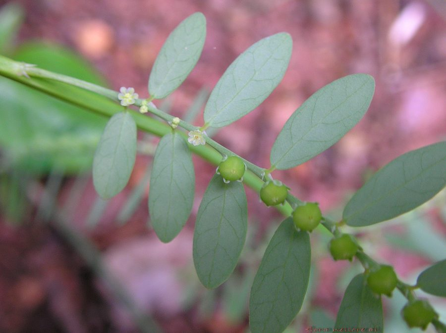

भुई आँवलाBhumi Amla
Phyllanthus fraternus · Phyllanthaceae · FLR-0152

- Scientific name
- Phyllanthus fraternus G.L. Webster
- Family
- Phyllanthaceae
- Hindi
- भुई आँवला
- Status here
- native
- IUCN
- not evaluated
- Review
- audited and independently read
When to look कब देखें
Present all year.
Uses and possibilities उपयोग और संभावनाएँ
“Traditional medicine” means a documented traditional use, not a claim that it works. Nothing on this page is medical advice.
Drawn from the documented uses in the profile below, where each is labelled traditional, current or a research lead. All uses →
भुई आँवला / Bhumi Amla
Phyllanthus fraternus G.L. Webster — Phyllanthaceae
भुई आँवला (गल्फ़ लीफ़फ्लावर) — पूर्वी उत्तर प्रदेश के खेतों और बाग़ों की बंजर ज़मीन पर उगने वाला एक नन्हा पौधा है। यह आयुर्वेद में सबसे महत्वपूर्ण पौधों में से एक है, खासकर लीवर (यकृत) और पित्त संबंधी विकारों के लिए। इसकी पत्तियाँ अँवले (Indian gooseberry) की छोटी नक़ल लगती हैं, इसीलिए इसे "ज़मीन का अँवला" (bhumi = earth, amla = gooseberry) कहते हैं। बहुत छोटे हरे फूल और लाल रंग की फलियाँ अगस्त-नवंबर में पकती हैं।
Quick Identification त्वरित पहचान
| Feature | Description |
|---|---|
| Plant habit | Small annual herb, 20–60 cm, highly branched, erect to spreading |
| Leaves | Elliptic to oblong, small (5–12 mm), arranged in alternate pairs |
| Flowers | Minute (1–2 mm), greenish, clustered at leaf axils |
| Fruits | Small, 3–4 mm, round, fleshy capsules, red to brown |
| Stems | Thin, green or reddish, angular |
| Root system | Tap root; entire plant easily pulled out |
Field tip: In a disturbed field or garden in August, look for a small, delicate herb with tiny leaves and small red fruits. The whole plant is no taller than a hand.
हिंदी — कैसे पहचानें: छोटा पौधा, बहुत छोटी पत्तियाँ, लाल फलियाँ।
Morphology आकारिकी
Biometrics:
| Measurement | Range |
|---|---|
| Plant height | 20–60 cm |
| Leaf length | 5–12 mm |
| Leaf width | 2–6 mm |
| Flower diameter | 1–2 mm |
| Fruit diameter | 3–4 mm |
Stem and branches: Thin, cylindrical, angular, green or reddish.
Leaves: Simple, alternate, elliptic to oblong, margins entire, glabrous.
Flowers: Unisexual, dioecious or monoecious; minute, in leaf axils.
Fruits: Capsules, round, 2–3 seeded, fleshy when young, drying to brown.
हिंदी: छोटा सब कुछ, पतली डाली, छोटी पत्तियाँ, लाल फल।
Behaviour & Ecology व्यवहार और पारिस्थितिकी
A small annual herb of disturbed fields and waste ground, thriving in poor soil and light shade. The plant grows rapidly during the monsoon, flowering and fruiting quickly. It is often overlooked as a weed despite its medicinal value. The plant sets seed profusely, ensuring persistence in the seed bank.
हिंदी: खराब ज़मीन पर भी उग जाता है, तेज़ी से बढ़ता है, बहुत बीज देता है।
Life Cycle / Phenology जीवन चक्र
| Month / season | Event |
|---|---|
| July–August | Germination and growth during monsoon |
| September–October | Flowering and fruit set |
| November–December | Peak fruiting; plant matures |
| January–February | Seed dispersal; plant dies |
हिंदी: बरसात में अंकुरण, सितंबर-नवंबर में फूल-फल।
Associated Species / Interactions संबंधित प्रजातियाँ
- Field companions: Punarnava, Doob Grass in agricultural fields.
Pests and Diseases कीट और रोग
- Minimal pests; generally hardy.
Agricultural / Human Relevance कृषि प्रासंगिकता
Traditional Preparations (not medical advice):
- Liver Support → Whole Plant → Dry the plant in shade and powder → Steep 1 teaspoon in warm water → Drink once daily.
- Jaundice → Leaves → Boil fresh leaves and filter → Drink 20–30 mL morning and evening.
- Digestive Complaints → Whole Plant → Decoction of dried plant, 10 g in 200 mL water → Drink 50 mL twice daily.
Today. The plant is sold in Ayurvedic markets; commercial preparations are available.
Research direction (a lead, not a result). Phyllanthins, the active compounds in Phyllanthus fraternus, have been isolated and studied in hepatoprotective research; clinical trials are ongoing in published literature.
हिंदी: लीवर के लिए सबसे अच्छा माना जाता है। पीलिया में। दवाई दुकानों में बिकता है।
Expected Locally स्थानीय रूप से अपेक्षित
Not a field record. Written from published accounts for eastern Uttar Pradesh. No confirmed local sighting yet — if you have seen it, that is what the atlas needs.
अभी तक स्थानीय पुष्टि नहीं। यह विवरण प्रकाशित स्रोतों से है, किसी अवलोकन से नहीं।
To be expected in all disturbed fields, gardens, and waste ground across the district from July to February.
Distribution वितरण
Global range: Native to South Asia and the Middle East; now pantropical.
In India: Widespread throughout all states in agricultural areas.
In Uttar Pradesh: Common in all districts.
In Basti district / eastern UP: Expected everywhere in disturbed ground.
Research Questions शोध प्रश्न
Anyone can investigate these | कोई भी इन प्रश्नों की जाँच कर सकता है
- How many bhumi amla plants germinate in a disturbed field after the monsoon? — Count seedlings per square metre.
- When do the fruits turn red and ripen? — Watch a plant from August to November.
- How is the plant used in traditional medicine in your village? / आपके गाँव में इसे दवा में कैसे इस्तेमाल करते हैं? — Ask a healer.
- How many fruits does one plant produce? — Count on a mature plant.
Similar Species मिलती-जुलती प्रजातियाँ
| Species | How to tell apart | हिंदी |
|---|---|---|
| Punarnava (Boerhavia diffusa) | Larger plant; opposite leaves with white underside; sticky fruits | बड़ा पौधा, सफेद पत्ती |
| Phyllanthus amarus | Similar; fruits smaller, more sparse; leaflets fewer per rachis | बहुत छोटी फलियाँ |
Field rule: A small herb with minute leaves and small red fruits in a disturbed field is bhumi amla.
Taxonomy & Classification वर्गीकरण
Original description. Described by Grady Linder Webster in 1955, in the Contributions from the Gray Herbarium. The genus Phyllanthus was established by Carl Linnaeus in 1753.
Subspecies. Monotypic.
Family and order placement. Phyllanthaceae, order Malpighiales. Phyllanthus is a tropical genus of about 400 species.
IUCN status rationale. Not evaluated. Widespread.
Photo Gallery फोटो गैलरी
Photos needed आवश्यक फोटो
- [ ] Whole plant in a field (पूरा पौधा)
- [ ] Close-up of leaves and red fruits (पत्तियाँ और फल)
References संदर्भ
- Webster, G.L. (1955). Contributions from the Gray Herbarium of Harvard University, 176: 53. [original description]
- Webster, G.L. (1994). Synopsis of the genera and suprageneric taxa of Euphorbiaceae. Annals of the Missouri Botanical Garden 81(1): 33–144.
- Kirtikar, K.R. & Basu, B.D. (1935). Indian Medicinal Plants, 2nd ed., vol. 2. Lalit Mohan Basu, Allahabad.
- Chopra, R.N., Nayar, S.L. & Chopra, I.C. (1956). Glossary of Indian Medicinal Plants. CSIR, New Delhi.
- Bagchi, G.D., Srivastava, K.C., Sinha, A.K., Saxena, R.K. & Shanker, K. (2001). Phyllanthus fraternus Webster — A potential hepatoprotective plant. Journal of Ethnopharmacology 74(2): 109–123.
- GBIF Occurrence Data — Phyllanthus fraternus, India (2026).
Source file: species/flora/medicinal/bhumi_amla.md